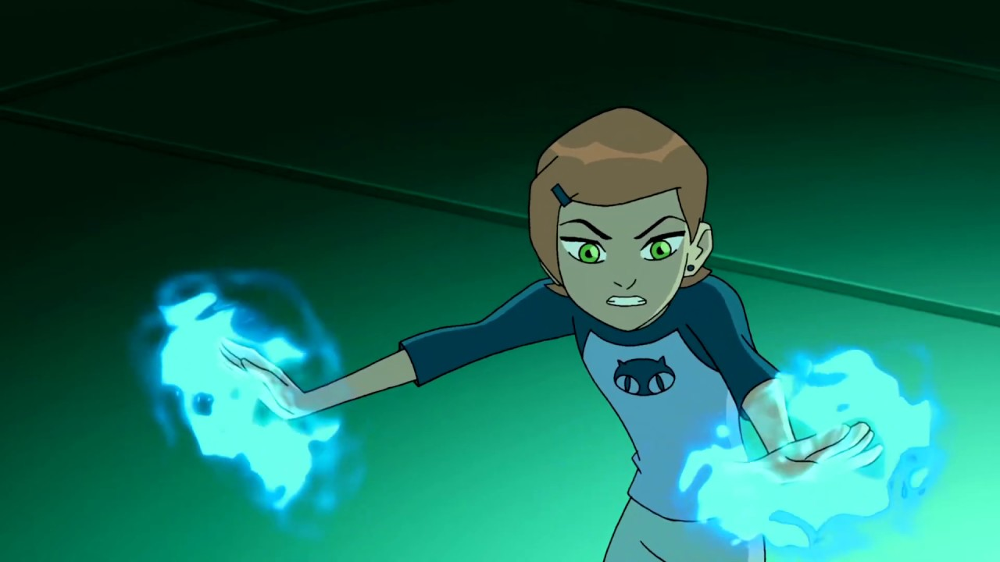
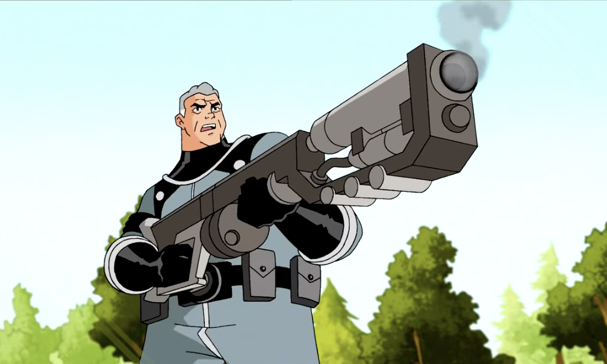
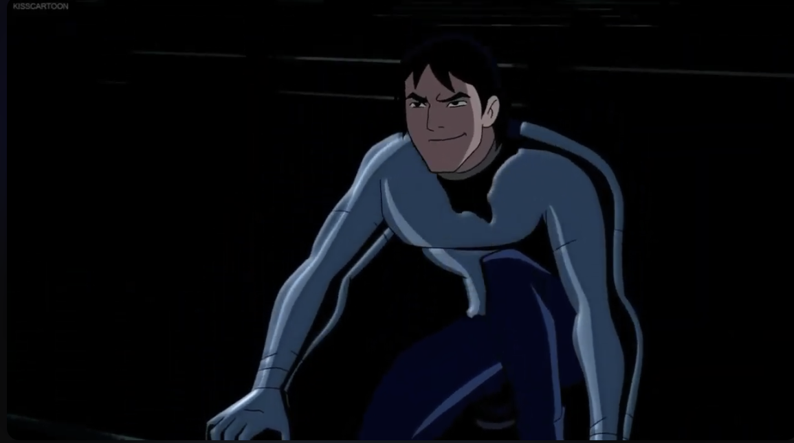
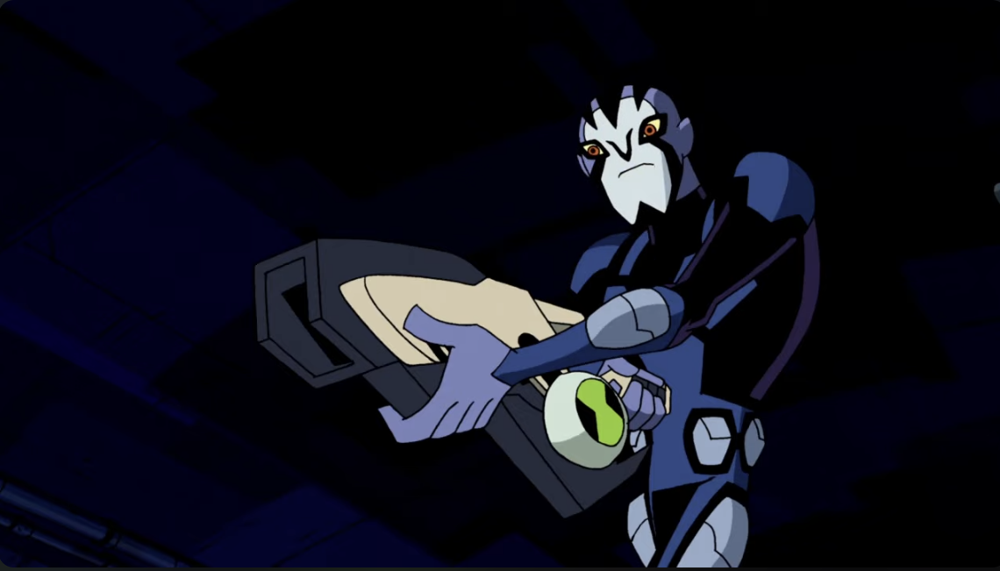

About Ben's Allies
Throughout the Ben 10 franchise, Ben Tennyson is supported by several important allies who help him grow as a hero. These characters play major roles across the different series, offering guidance, teamwork, and unique abilities that complement Ben's transformations.
This page highlights Ben's most important allies from across the franchise.
Gwen Tennyson

Gwen is Ben's cousin and one of his closest allies. Smart, resourceful, and level-headed, she often balances out Ben's impulsive nature. In the classic series, Gwen uses her intelligence, martial arts, and magical abilities. In later series, she discovers her Anodite heritage, giving her powerful energy-based abilities.
Key Traits:
- Skilled in magic and energy manipulation
- Highly intelligent and strategic
- Acts as the voice of reason on the team
Grandpa Max Tennyson

Max Tennyson is Ben and Gwen's grandfather and a retired Plumber — a member of an intergalactic law-enforcement organization. Wise, experienced, and caring, Max guides the kids through their adventures and teaches them responsibility. His knowledge of aliens and the universe is crucial to the team's success.
Key Traits:
- Former Plumber with deep alien knowledge
- Experienced fighter and strategist
- Supportive mentor and protector
Kevin Levin

Kevin starts as an enemy in the classic series but becomes one of Ben's strongest allies in Alien Force and beyond. He has the ability to absorb materials and energy, allowing him to transform his body. Despite his rough personality, Kevin is loyal and deeply cares about his friends — especially Gwen.
Key Traits:
- Can absorb and transform into different materials
- Skilled mechanic and weapons expert
- Complex anti-hero turned loyal teammate
Rook Blonko

Rook is Ben's partner in the Omniverse series. A disciplined and highly trained Plumber, Rook uses advanced technology — especially his Proto-Tool — to fight alongside Ben. His calm, serious personality contrasts with Ben's more relaxed attitude, making them an effective duo.
Key Traits:
- Expert Plumber with advanced combat training
- Uses the versatile Proto-Tool weapon
- Calm, respectful, and highly disciplined
Which Ally Would Be Your Preferred Partner?
Answer the questions below to find out which Ben 10 ally would be your ideal teammate!